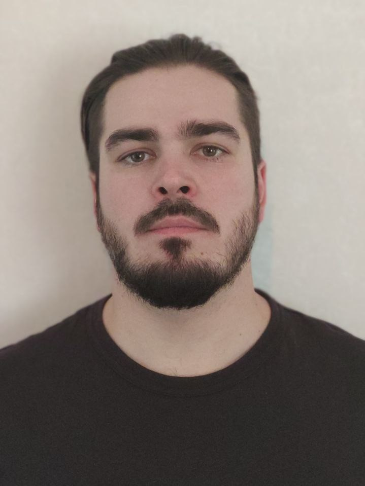

I'm a QA engineer with experience testing mobile application and backend.
I create test documentation and develop automated UI tests for ios platform, coordinate and execution manual testing.
I'm lovin ambitionaly tasks and always looking to learn and expand my skill.
I can interact with all team members to ensure the quality of the product. Experienced in working with interdisciplinary teams.
- Skills
-
Quality Assurance Skills
Mobile Testing · Test Design · Android studio · Xcode · Python · SQL · JIRA · Confluence
· Git · Agile · Charles Proxy · Postman · Docker · Bash
Telecommunications Skills
AutoCAD · GIS · Fiber-Optic Network · Building Regulations · Administrative Law
- Experience
-
Center of Financial Technology (CFT)
Quality Assurance Engineer - Tomsk, Russia - 2021-2023
- Testing of the KoronaPay mobile application (iOS, Android).
- Creating test plans, checklists, test cases, bug reports.
- Developing automated UI tests for ios platform
- Have knowledge of the features of manual testing of mobile applications
- Understanding of client-server involvement
Rostelecom
Lead Engineer of Telecommunications - Tomsk, Russia - 2017-2021
- Verification and approval of documentation of designed facilities.
- Creating of acts and protocols of the results of measurements of the fiber-optic network.
- Organization of security and preventive work on city communication networks.
- Interacting and resolution of conflict situations with official authorities and other organizations.
- Leading a team of 10 Engineers and Specialists
Engineer of Telecommunications - Tomsk, Russia - 2015-2017
- Installation and maintenance of station equipment (Cisco, Alcatel) of the technologies xDSL, ETTH, GPON.
- Setting up client equipment (ADSL).
- Education
-
Voronezh Institute of High Technologies - Voronezh, Russia
Specialist Software Testing
Major: Software Testing
-
Tomsk State University - Tomsk, Russia
Bachelor’s Degree
Major: Radio Physics
Minor: Radio Physics
-
- Language
- English - B1
- Russian - Native language
- Hobbies
- Cycling, Snowboarding, Hiking, Photography